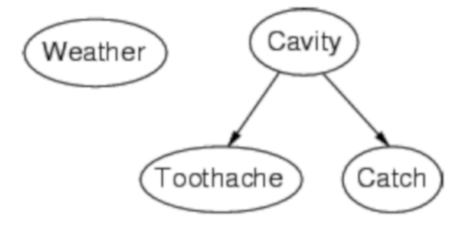
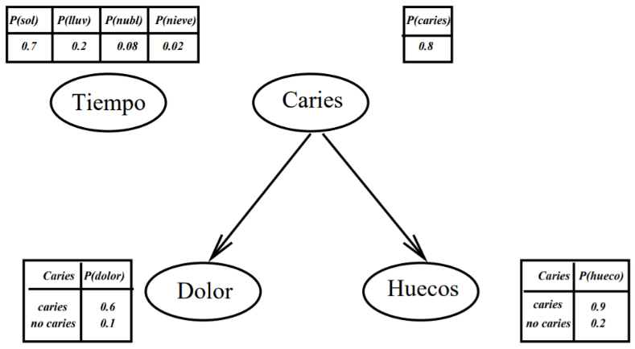
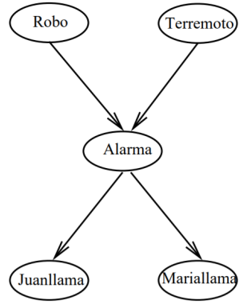
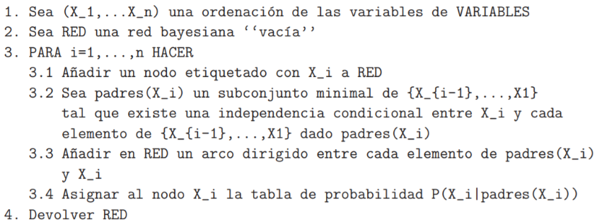
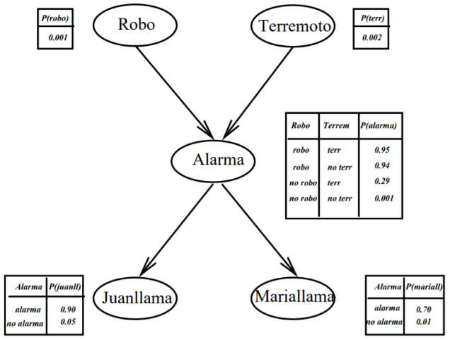
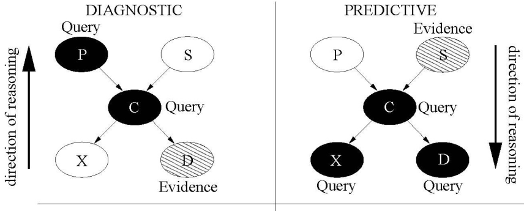

Created: 2021-04-03 sáb 19:44
Problema
Cantidad Excesiva de Información a mantener con la base de conocimiento. Intratabilidad con Complejidad Exponencial del cálculo de probabilidades conjuntas
Solución: *Independencia*
Detectar proposiciones cuya creencia no afecta la creencia de otra proposición
Independencia
Detectar proposiciones cuya creencia no afecta la creencia de otra proposición
Independencia Total es muy rara
Independencia Condicional
\[P(h, e) = P(h ∧ e) = P(h|e) × P(e) = P(h) × P(e)\]
Definición
Una variable \(X\) se dice que es independiente de la variable aleatoria \(Y\) dada la variable aleatoria \(Z\) , si para todos los valores de esa variable, ie para todo \(a_i\) , \(b_j\) y \(c_k\) se cumple: \[P(X = a_i | Y = b_j ∧ Z = c_k ) = P(X = a_i | Z = c_k)\] Esto es, el valor de \(Y\) no afecta el conocimiento del agente del valor de \(X\) dado el valor de \(Z\).
Theorem
Si la variable aleatoria \(X\) es independiente de la variable \(Y\) dada la variable aleatoria \(Z\), entonces para todo \(a_i\) , \(b_j\) , \(c_k\) , \[P(X = a_i ∧ Y = b_j | Z = c_k ) = P(X = a_i | Z = c_k )× P(Y = b_j | Z = c_k)\]
Una Red Bayesiana es un grafo dirigido acı́clico en el que cada nodo es etiquetado con la información cuantitativa probabilı́stica


Nótese que solo se representa una columna en el caso de variables bivaluadas. En el caso del tiempo podrı́amos haber representado solo 3 valores.
Dada una variable aleatoria \(V\) puede existir solo un conjunto limitado de variables con la propiedad de afectar directamente los valores que esta variable puede tomar y los valores tomados por cualquier otra variable no afecta a los valores tomados por \(V\).
Si \(P(e|k) \neq 0\) entonces
\[P(h|e ∧ k) = \frac{P(e|h ∧ k) × P (h|k)}{P(e|k)}\]
Si asumimos el conocimiento \(k\) como implı́cito y teniendo que \(P(e) \neq 0\) entonces
\[P(h|e) = \frac{P(e|h) × P (h)}{P(e)}\]
Para representar una red de creencias necesitamos considerar:
¿Cuáles son los nodos-variables de la Red a representar y cuál su dominio?
| Nombre del Nodo | Tipo | Valor |
|---|---|---|
| Robo | Booleano | {T,F} |
| Terremoto | Booleano | {T,F} |
| Alarma | Booleano | {T,F} |
| JuanLlama | Binario | {Si,No} |
| Marı́aLlama | Binario | {Si,No} |
Armemos una topologı́a como una red causal: Esto es de las causas a los efectos.

Nótese que al asumir la propiedad de Markov no hay modo de que un robo influya sobre el hecho de que Juan llame excepto si tenemos en cuenta si suena la alarma.
Supongamos un conjunto de variables aleatorias VARIABLES que representan un dominio de conocimiento (con incertidumbre) y que las ordenamos en forma causal (causa-efecto).


Las Probabilidades para \(Alarma = False\) son:
| Robo | Terrem | \(P(A=False \vert R, T)\) |
|---|---|---|
| T | T | 0,05 |
| T | F | 0,06 |
| F | T | 0,610 |
| F | F | 0,999 |
La topologı́a de la red nos expresa que:
Representan una Distribución de Probabilidades Conjunta y Completa
Consideremos una red bayesiana con \(n\) variables aleatorias y un orden entre esas variables:
\(X_1,\ldots,X_n\)
\(padres(X_i) ⊆ {X_{i−1},\ldots,X_1}\) para esto, basta que el orden escogido
sea consistente con el orden parcial que induce el grafo
Estas condiciones expresan formalmente nuestra intuición al representar nuestro mundo mediante la red bayesiana correspondiente. En el ejemplo de la alarma, la red expresa que creemos que
\(P(Mariallama|Juanllama,Alarma,Terremoto,Robo) =\) \(P(Mariallama|Alarma)\)
La tarea básica de un sistema de inferencia probabilı́stico es:

Recordemos la Regla de la Cadena:
Como en las redes bayesianas el valor de un nodo particular está condicionado solamente sobre el valor de los nodos padres, entonces
\[P(X_1 ∧ X_2 ∧ \ldots ∧ X_n ) = \Pi^n_{i=1} P(X_i |Padres(X_i))\]
siendo que \(Padres(X_i) ⊆ \{X_1 ∧ X_2 ∧ \ldots ∧ X_n\}\)
La probabilidad de que la alarma suene, Juan y Marı́a llamen a la policı́a, pero no haya ocurrido nada es (usamos iniciales, por simplificar)
Dominios localmente estructurados:
Supongamos que tenemos una variable Booleana Y que es el único padre de X. Si E no contiene ningún descendiente de X, entonces
Recordemos que la Red de Creencias especifica los valores de \(P(X|Y)\) y \(P(X|¬Y)\).
Extendemos a múltiples padres \(Y_1,\ldots, Y_n\) de \(X\), cada \(Y_i\) con dominio \(D_i\). Si \(E\) no involucra a ninguno de los descendientes de \(X\), luego:
Recordemos que las probabilidades \(P(X|Y= d)\) están especificadas en la red de creencias.
Supongamos que \(E\) es una conjunción de \(E_1 ∧ E_2\) , donde \(E_1\) involucra solamente descendientes de \(A\) y \(E_2\) no contiene descendientes de \(A\). La Regla de Bayes puede ser utilizada para calcular \(P(A|E)\): \[P(A|E_1 ∧ E_2 ) = \frac{P(E_1|A ∧ E_2) × P(A|E_2)}{P(E_1|E_2)}\]
Calculemos algunas probabilidades
Nótese que como \(Robo\) y \(Terremoto\) son independientes, entonces
\[P(Robo=T|Terr = T) = P(Robo=T) = 0,001\] \[P(Terr=T|Robo = T) = P(Terr=T) = 0,002\]